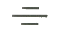
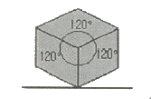
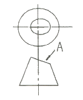
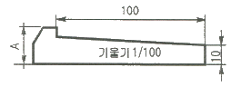
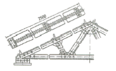
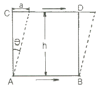
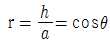
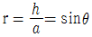
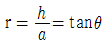
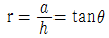

압연기능사 (2014-04-06 기출문제)
1과목: 금속재료일반
1. 높은 온도에서 증발에 의해 황동 표면으로부터 Zn 이 탈출되는 현상은?
- 응력부식균열
- 탈아연 부식
- 고온 탈아연
- 저온풀림경화
(정답률: 80%)

2. 구상흑연주철의 물리적·기계적 성질에 대한 설명으로 옳은 것은?
- 회주철에 비하여 온도에 따른 변화가 크다.
- 피로한도는 회주철보다 1.5~2.0배 높다.
- 감쇄능은 회주철보다 크고 강보다는 작다.
- C, Si 량의 증가로 흑연량은 감소하고 밀도는 커진다.
(정답률: 58%)
3. 열간 금형용 합금 공구강이 갖추어야 할 성능을 설명한 것 중 틀린 것은?
- 고온경도 및 강도가 높아야 한다.
- 내마모성은 크며, 소착을 일으켜야 한다.
- 열충격 및 열피로에 잘 견디어야 한다.
- 히트 체킹(heat checking)에 잘 견디어야 한다.
(정답률: 85%)
4. 금속의 변태점을 측정하는 방법이 아닌 것은?
- 비열법
- 열 팽창법
- 전기 저항법
- 자기 탐상법
(정답률: 68%)
5. 철강에서 철 이외의 5대 원소로 옳은 것은?
- C, Si, Mn, P, S
- H2, S, P, Cu, Si
- N2, S, P, Mn, Cr
- Pb, Si, Ni, S, P
(정답률: 91%)
6. 두랄루민 합금의 주성분으로 옳은 것은?
- Al – Cu – Mg - Mn
- Ni – Mn – Sn - Si
- Zn – Si – P - Al
- Pb – Ag – Ca – Zn
(정답률: 94%)
7. 다음 금속의 결정구조 중 전연성이 커서 가공성이 좋은 격자는?
- 조밀육방격자
- 체심입방격자
- 단사정계격자
- 면심입방격자
(정답률: 76%)
8. 강의 표준조직을 얻기 위한 가장 적합한 열처리 방법은?
- 담금질(quenching)
- 뜨임(tempering)
- 풀림(annealing)
- 불림(normalizing)
(정답률: 59%)
9. 다음 중 형상 기억 합금에 관한 설명으로 틀린 것은?
- 열탄성형 마텐자이트가 형상 기억 효과를 일으킨다.
- 형상 기억 효과를 나타내는 합금은 반드시 마텐자이트 변태를 한다.
- 마텐자이트 변태를 하는 합금은 모두 형상 기억 효과를 나타낸다.
- 원하는 형태로 변형시킨 후에 원래 모상의 온도로 가열하면 원래의 형태로 되돌아간다.
(정답률: 66%)
10. 인장시험편이 네킹을 일으킨 후 파단에 이르는 단계까지의 순서로 옳은 것은?
- 미소공극 → 내부 균열 → 전면 파단 → 최종 파단
- 내부 균열 → 미소공극 → 전면 파단 → 최종 파단
- 전면 파단 → 내부 균열 → 미소공극 → 최종 파단
- 최종 파단 → 내부 균열 → 미소공극 → 전면 파단
(정답률: 74%)
11. 풀림한 황동의 인장강도는 Zn 이 몇 % 함유될 때 최대 값에 도달하는가?
- 10%
- 25%
- 40%
- 55%
(정답률: 67%)
12. Al-Si계 합금을 주조할 때, 금속 나트륨을 첨가하여 조직을 미세화시키기 위한 처리는?
- 심랭 처리
- 개량 처리
- 용체화 처리
- 구상화 처리
(정답률: 75%)
13. 다음 기하공차 기호의 종류는?

- 직각도
- 대칭도
- 평행도
- 경사도
(정답률: 72%)
14. 그림과 같은 방법으로 그린 투상도는?

- 정투상도
- 평면도법
- 사투상도
- 등각투상도
(정답률: 88%)
15. 도면에 치수를 기입할 때 유의사항으로 틀린 것은?
- 치수의 중복 기입을 피해야 한다.
- 치수는 계산할 필요가 없도록 기입해야 한다.
- 치수는 가능한 한 주투상도에 기입해야 한다.
- 관련되는 치수는 가능한 한 정면도와 평면도 등 모든 도면에 나누어 기입한다.
(정답률: 83%)
2과목: 금속제도
16. 다음 중 국제표준화기구 규격은?
- NF
- ASA
- ISO
- DIN
(정답률: 89%)
17. 도면에 정치수로 기입된 모든 치수이며 치수 허용한계의 기준이 되는 치수를 말하는 것은?
- 실치수
- 치수치수
- 기준치수
- 허용한계치수
(정답률: 73%)
18. 재료 기호 SS330으로 표시된 것은 어떠한 강재인가?
- 스테인레스 강재
- 용접구조용 압연 강재
- 일반구조용 압연 강재
- 기계구조용 탄소 강재
(정답률: 62%)
19. 가는 실선으로 사용하지 않는 선은?
- 피치선
- 지시선
- 치수선
- 치수 보조선
(정답률: 72%)
20. 그림과 같이 원뿔 형상을 경사지게 절단하여 A 방향에서 보았을 때의 단면 형상은? (단, A 방향은 경사면과 직각이다.)

- 진원
- 타원
- 포물선
- 쌍곡선
(정답률: 87%)
21. 기계 제도의 제도 통칙은 한국산업표준의 어디에 규정되어 있는가?
- KS A 0001
- KS B 0001
- KS A 00⑤
- KS B 00⑤
(정답률: 74%)
22. 그림은 성크 키(Sunk Key)를 도시한 것으로 A의 길이는 얼마인가? (문제 오류로 실제 시험에서는 모두 정답처리 되었습니다. 여기서는 1번을 누르면 정답 처리 됩니다.)

- 11
- 13
- 15
- 17
(정답률: 82%)
23. 한쌍의 기어가 맞물려 회전하기 위한 조건으로 어떤 값이 같아야 하는가?
- 모듈
- 이끝 높이
- 이끝원 지름
- 피치원의 지름
(정답률: 80%)
24. 그림은 교량의 트러스 구조물이다. 중간 부분을 생략하여 그린 주된 이유는?

- 좌우, 상하 대칭을 도면에 나타내기 어렵기 때문에
- 반복 도형을 도면에 나타내기 어렵기 때문에
- 물체를 1각법 또는 3각법으로 나타내기 어렵기 때문에
- 물체가 길어서 도면에 나타내기 어렵기 때문에
(정답률: 81%)
25. 압연 두께 자동제어(AGC)의 구성요소 중 압하력을 측정하는 것은?
- 굽힘블록
- 로드셀
- 서브밸브
- 위치검출기
(정답률: 89%)
26. 연료의 착화온도가 가장 높은 것은?
- 수소
- 갈탄
- 목탄
- 역청탄
(정답률: 82%)
27. 사상압연 last stand와 권취기의 멘드럴 간에 있는 설비들 즉, ROT, 핀치 롤, 유니트 롤, 멘드렐 등은 스트립의 권취 형상을 좋게하기 위하여 스트립의 머리부분이 통과할 때 사상압연기의 last stand 보다 일정비율 빠르게 하는 것은?
- lead율
- leg율
- loss율
- tight율
(정답률: 80%)
28. 열간 압연시 발생하는 슬래브 캠버(Camber)의 발생원인이 아닌 것은?
- 상하 압하의 힘이 다를 때
- 소재 좌우 두께 편차가 있을 때
- 상하 Roll 폭방향 간격이 다를 때
- 소재의 폭방향으로 온도가 고르지 못할 때
(정답률: 57%)
29. 압연유 급유방식에서 순환방식의 특징이 아닌 것은?
- 폐유처리 설비는 작은 용량의 것이 가능하므로 비용이 적게 든다.
- 냉각효과 면에서 그 효율이 높고, 값이 저렴한 물을 사용할 수 있다.
- 급유된 압연유를 계속하여 순환, 사용하게 되므로 직접방식에 비하여 압연유의 비용이 적게 든다.
- 순환하여 사용하기 때문에 황화액에 철분, 그 밖의 이물질이 혼합되어 압연유의 성능을 저하시키므로 압연유 관리가 어렵다.
(정답률: 69%)
30. 압연재가 롤 사이에 들어갈 때 접촉부에 있어서 압연 작용이 가능한 전제 조건이 틀린 것은?
- 접촉부 안에서의 재료의 가속은 무시한다.
- 압연재는 접촉부 이외에서는 외력은 작용하지 않는다.
- 압연 방향에 대한 재료의 가로 방향의 증폭량은 무시한다.
- 압연 전후의 통과하는 재료의 양(체적)을 다르게 한다.
(정답률: 67%)
3과목: 압연기술
31. 압연조건이 다음과 같을 때 롤 갭(Roll Gap)은 몇 mm로 하여야 하는가? (단, 압연조건 : 밀 강성은 500ton, 입축두께는 20mm, 출측두께는 15mm, 압연속도는 10 mpm, 압연하주은 1000ton 이다.)
- 13
- 15
- 16
- 17
(정답률: 33%)
32. 완전한 제품을 만든 후 형상을 개선하기 위한 압연공정은?
- 냉간압연
- 열간압연
- 조질압연
- 분괴압연
(정답률: 87%)
33. 공형에 대한 설명 중 틀린 것은?
- 개방공형은 압연할 때 재료가 공형 간극으로 흘러 나가는 결점이 있다.
- 패쇄공형에서는 재료의 모서리성형이 쉬워 형가의 압연에 사용한다.
- 개방공형은 성형 압연 전의 조압연 단계에서 사용된다.
- 폐쇄공형은 1쌍의 롤에 똑같은 공형이 반씩 패어있다.
(정답률: 73%)
34. 냉간압연의 공정을 순서대로 나열한 것은?
- 산세척 → 냉연 → 청정 → 풀림 → 조질 → 절단
- 산세척 → 청정 → 냉연 → 풀림 → 조질 → 절단
- 산세척 → 냉연 → 풀림 → 청정 → 조질 → 절단
- 산세척 → 청정 → 냉연 → 조질 → 풀림 → 절단
(정답률: 64%)
35. 공형압연설계에서 스트레이트 방식의 결점을 개선하기 위해 공형을 경사시켜 직접 압하를 가하기 쉽게 한 것으로 재료를 공형에 정확히 유도하기 위한 회전가이드를 장치함으로서 좋은 효과가 있으며 I 형강보다 오히려 레일 압연에서 볼 수 있는 공형 방식은?
- 다곡법
- 버터플라이 방식
- 다이애거널 방식
- 무압하 변형공형 방식
(정답률: 78%)
36. 높이 45mm, 폭 100mm 길이 2m 인 소재를 압연하여 높이 25mm, 폭 110mm가 되었을때의 길이는?
- 2.57m
- 3.27m
- 3.54m
- 4.27m
(정답률: 60%)
37. 연연속 압연기술에 대한 설명으로 틀린 것은?
- 1차 압연의 두께는 약 25~35mm 이다.
- 접합시 소요시간은 약 10분정도가 소요 된다.
- 접합방식은 용접방식과 전단변형접합 방식이 있다.
- 선행과 후행의 2개의 바(bar)를 중첩해 열간압연 한다.
(정답률: 59%)
38. 산세 작업에서 후공정의 작업성 향상을 위한 예비처리 작업에 해당되지 않는 것은?
- 권취형상을 개선한다.
- 방청 및 압연시 보조윤활을 위한 도유를 실시한다.
- 작업능률 및 품질 향상을 위해 연마 작업을 실시한다.
- 톱귀 등 Edge 부 결함발생 방지를 위한 사이드 트리밍을 실시한다.
(정답률: 49%)
39. 사사압연기의 제어기기 중 압연재의 형상제어와 관계가 가장 먼 것은?
- 롤 시프트(roll shift)
- ORG(On Line Roll Grinder)
- 페어 크로스(pair cross)
- 롤 벤더(roll bender)
(정답률: 75%)
40. 냉간압연된 코일은 무엇으로 탈지한 후에 풀림 공정으로 보내는 것이 좋은가? (단, 일부의 용융아연 도금 라인은 제외한다.)
- 염산
- 증류수
- 그리스 유
- 알칼리 세제
(정답률: 70%)
41. 압연유 선정시 요구되는 성질이 아닌 것은?
- 고온, 고압하에서 윤활 효과가 클 것
- 스트립 면의 사상이 미려할 것
- 기름 유화성이 좋을 것
- 산가가 높을 것
(정답률: 83%)
42. 그림에서 물체 ABCD에 전단면적인 힘이 물체 ABCD에 가해서 a만큼 변형하였다고 하면 이 경우의 응력을 전단응력(shear stress)이라 할 때 전단 변형량은 어떻게 나타내는가?





(정답률: 51%)
43. 다음 압연에 관계되는 용어들의 설명으로 틀린 것은?
- 압연재가 물려 들어가는 것을 물림이라 한다.
- 압연 스케줄에 설정된 롤 간격에 따라 결정되는 것을 압하률이 한다.
- 압연과정에 있어서 롤 축에 수직으로 발생하는 힘을 압연력이라 한다.
- 압연재가 롤 사이로 물려 들어가면 압연기의 각 구조 부분이 느슨해져 롤 간격이 조금 늘어난다. 이러한 현상을 롤 간격이라 한다.
(정답률: 76%)
44. 냉간압연에 대한 설명으로 틀린 것은?
- 치수가 정확하고 표면이 깨끗하다.
- 압연 작업의 마무리 작업에 많이 사용된다.
- 재료의 두께가 얇은 판을 얻을 수 있다.
- 열간 압연판에서는 이방성이 있으나 냉간 압연판은 이방성이 없다.
(정답률: 78%)
45. 압연기에서 롤과 재료 사이의 접촉각을 A, 마찰각을 B 로 할 때, 재료가 압연기에 물려들어 갈 조건은?
- A ＞ 2B
- A ＞ B
- A ＜ B
- A = B
(정답률: 79%)
4과목: 압연설비
46. 조 압연기에 설치된 AWC(Automatic With Control)가 수행하는 작업은?
- 바의 형상 제어
- 바의 폭 제어
- 바의 온도 제어
- 바(bar)의 두께 제어
(정답률: 71%)
47. 밀 스프링(Mill Spring)이 발생하는 원인이 아닌 것은?
- 롤의 휨
- 롤 냉각수
- 롤 쵸크의 움직임
- 하우징의 연신 및 변형
(정답률: 60%)
48. 가열온도가 너무 낮거나 충분히 균열되어 있지 않을 때 압연 중에 나타나는 것과 관계없는 것은?
- 모터의 과부하
- 압연하중의 증가
- 제품의 형상불량
- 급격한 스케일 생성량 증가
(정답률: 65%)
49. 압연기의 종류가 아닌 것은?
- 다단압연기
- 유니버설압연기
- 4단 냉각 압연기
- 스킷마크(skit mark) 압연기
(정답률: 77%)
50. 압연기 유도장치의 요구 사항이 아닌 것은?
- 수명이 길어야 한다.
- 조립 해체가 용이해야 한다.
- 열충격에 의한 변형이 없어야 한다.
- 유도 자치 재질은 저 탄소강을 사용해야 한다.
(정답률: 82%)
51. 산세 탱크(pickling tank)는 3~5조가 직렬로 배치되어 있다. 산세 탱크 내의 황산 또는 염산농도에 대한 설명으로 옳은 것은?
- 탱크 전체의 농도를 일정하게 유지한다.
- 제1산세 탱크로부터 차례로 농도가 짙어진다.
- 제1산세 탱크로부터 차례로 농도가 묽어진다.
- 제1산세 탱크로부터 2, 3, 4 탱크를 교대로 농도를 짙게 또는 묽게 한다.
(정답률: 63%)
52. 스트립 사행을 방지하기 위하여 설치되는 장치명은?
- 스티어링 롤(Steering Roll)
- 텐션릴(Tension Reell)
- 브라이들 롤(Bridle Roll)
- 패스라인 롤(Pass Line Roll)
(정답률: 43%)
53. 재해의 기본원인 4M 에 해당하지 않는 것은?
- Machine
- Media
- Method
- Management
(정답률: 84%)
54. 압연용 소재를 가열하는 연속식 가열로를 구성하는 부분(설비)이 아닌 것은?
- 예열대
- 가열대
- 균열대
- 루퍼
(정답률: 85%)
55. 열연박판의 제조설비가 아닌 것은?
- 권취기
- 조압연기
- 연속가열로
- 전해청정기
(정답률: 66%)
56. 워-킹빔식 가열로에서 가열재료를 반송(搬送)시키는 순서로 옳은 것은?
- 전진 → 상승 → 후퇴 → 하강
- 하강 → 전진 → 상승 → 후퇴
- 후퇴 → 하강 → 전진 → 상승
- 상승 → 전진 → 하강 → 후퇴
(정답률: 76%)
57. 롤의 중심에서 압연하중 중심까지의 거리는?
- 토크 모멘트(torque moment)
- 접촉길이(contact distance)
- 토크 아암(torque arm)
- 방출구 길이(extraction distance)
(정답률: 81%)
58. 압연 부대설비 중 3단식 압연기에서 압연재를 하루 롤과 중간 롤의 사이로 패스(pass)한 후, 다음 패스(pass)를 위하여 압연재를 들어 올려 중간 롤과 상부 롤 사이로 밀어 넣는 역할을 하는 것은?
- 작업용 롤러 테이블
- 반송용 롤러 테이블
- 리프팅 테이블
- 강괴 장입기
(정답률: 73%)
59. 안전점검의 가장 큰 목적은?
- 장비의 설계상태를 점검
- 투자의 적정성 여부 점검
- 위험을 사전에 발견하여 시정
- 공정 단축 적합의 시정
(정답률: 90%)
60. 냉간압연 설비 중 출측 권취설비에 사용되지 않는 것은?
- 텐션 릴(tension reel)
- 벨트 레퍼(belt wrapper)
- 캐러셀 릴(carrousel reel)
- 페이 오프 릴(pay off reel)
(정답률: 57%)